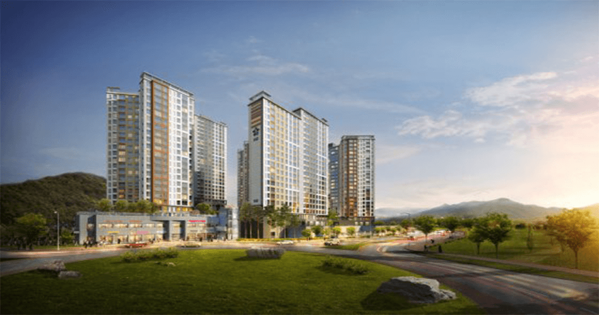

동문건설
동문건설에 방문해 주신 여러분을 환영합니다.

새들의 둥지처럼 가족의 꿈과 행복이 깃드는 보금자리 - 그것은 Humanism이 가장 중요한 기본이 되어야 합니다.
인간의 다양한 삶의 양태를 담을 수 있는 편안하고 아늑한 주거공간을 실현하기 위해서는 고객이 원하는 여러 가지
요소들을
최대한 집약하여 설계에 꼼꼼히 반영함으로써 더 이상 바랄게 없는 생활공간을 창조합니다.
동문건설의 수상내역
동문건설은 각종 언론과 기관을 통해 은탑산업훈장, 동탑산업훈장, 주거문화대상, 각종 히트상품 선정 등 품질과 기술력으로 당당히 인정받았습니다. 앞으로도 동문건설은 건전한 주거문화정착과 주택의 질적수준 향상을 위해 더 많은 연구와 노력을 통하여 더 나은 결실로 보답하겠습니다.
동문건설의 건설철학
자연 속 에코폴리스 환경 구현
동문건설의 기본은 환경입니다. 당장 눈앞에 보기 좋음 보다 100 년 동안 이 집을 거쳐갈 햇빛, 바람, 눈, 비 그리고 사람을 생각합니다. 자연을 품은 공간디자인, 사는 사람의 기분까지 생각하는 친환경설계! 이를 위해 동문건설은 전문화된 인력과 끊임없는 연구개발로 집이 자연의 일부로, 사람이 자연과 조화롭게 생활을 누리는 삶의 공간을 디자인 하기 위해 최선을 다하고 있습니다.